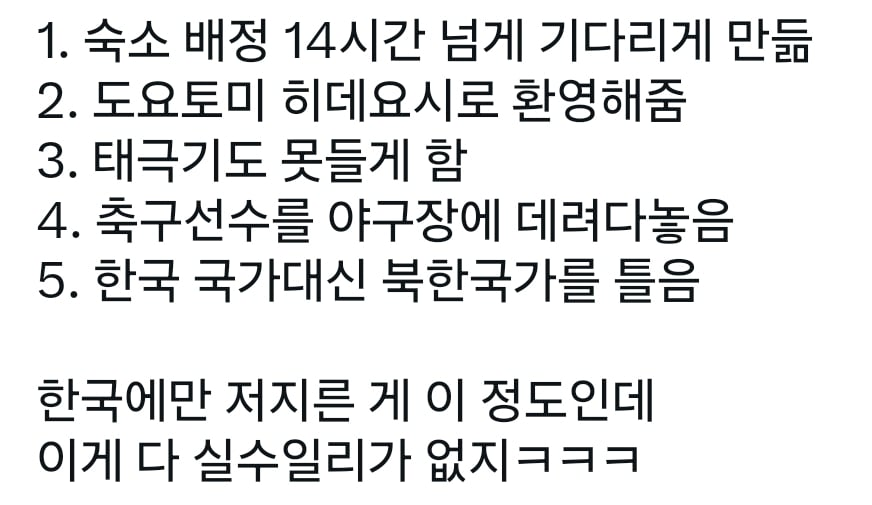
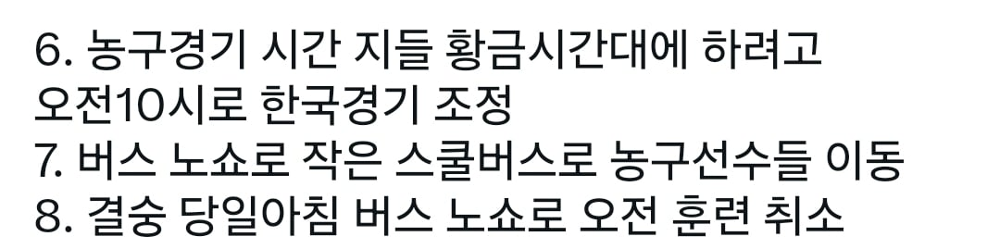
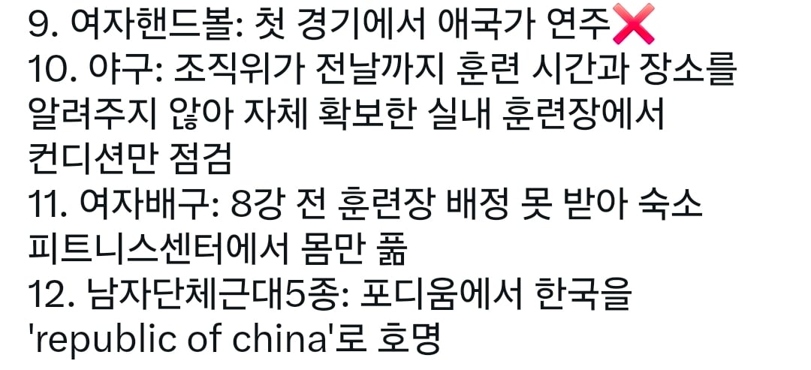
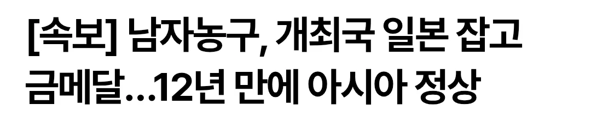

but

일본의 음습한 짓에도 한국팀 잘해줬음



but

일본의 음습한 짓에도 한국팀 잘해줬음
이거 뭐 전문가들이 슈킹할까봐 자체적으로 했다는데 ㅋㅋ
자체적으로 한다? 그럼 윗대가리들이 더 쉽게 개입가능하지 ㅋㅋ 위력으로 찍어누르면 되는데..
저 글부터가 의도적으로 한국팀'만' 피해를 봤다는 식으로 써있는데, 일부는 과장되어 있음
1. 숙소배정은 다른 모든팀도 다 부족해서 기다림. 일본도 숙소배정이 제대로 안 되어서 객실을 이상하게 배정받거나 부족한 경우들이 발생함. 다만, 다른 나라들에 비해 그 상황을 빨리 전달받아 대책을 마련하는 데 유리했음
2. 이건 뭐 역사적, 정치적인 내용이라 패쓰. 음침하다고 하면 음침한 게 맞음
3. 주부공항에서 태극기뿐 아니라 다른 나라 국기들도 못 들게 함
4. 한국과 같이 경기하는 카타르 선수들도 똑같이 야구장에 잘못 데려다놓음
5. 이건 명백한 잘못이긴 함
6. 자국경기나 메인매치를 황금시간대에 배치하는 건 어느나라나 마찬가지
7. 이건 일본 내에서도 매우 비판받는 사건이고, 의도적이라고 의심받아도 할말없는 거라는 반응들임
8. 이건 7번으로 인해 발생한 일. 다른 사건이 추가로 발생한 게 아님
9. 5번의 실수 때문에 일시적으로 모든 국가 중단한 거. 한국 여자 핸드볼팀만 애국가 연주 안 한 게 아님
10. 다른 나라들도 모두 제대로 된 훈련장 구하지 못함. 우리나라는 간신히 다른 장소 구하긴 했으나, 일부 국가는 주차장에서 훈련했을 정도
11. 다른 나라 선수들도 공항에서 몇 시간씩 기다리거나, 숙소와 한참 떨어진 위치에 데려다 준 경우 다수 발생
12. 이것도 의심은 갈 상황이겠지만, 당시 개인전 금메달이 중국이고, 단체전이 한국이어서 헷갈렸을 가능성이 더 높음(이후 실제로 결과표시도 개인전 순위를 잘못 적어놓음. 운영이 개판이었다는 반증임)
그낭 운영이 개판이구만
일부 음습함이 있었겠지만 나도 이게 대부분은 혐한이라기보단 그냥 병신들의 병신짓이었다고 생각해
사실 우리나라도 비슷한 행위를 했기에 뭐 일본놈이 음습하다 어쩌고 하면 내선일체가 되어버리는 거지.
https://www.yna.co.kr/amp/view/AKR20210724000400005
[올림픽] MBC, 우크라이나 입장 때 체르노빌 사진 사용 사과 (2021. 7. 24.)
방송사 찐빠랑 운영 주체의 찐빠는 좀 다른 문제이긴 한데...
ㄹㅇ 나도 그냥 잼버리 한거같음 ㅋㅋㅋㅋㅋㅋ
어이어이 펙트를 쓰면 원종단이 된다고?
걍 잼버리 한 것 같은데
2번 도요토미 히데요시도 개억까지
일본에서 가장 유명한 위인인 3대 영걸이 모두 나고야 출신이라 홍보에 안 쓰는게 이상한 수준인데
괜히 일부 한국인만 문제 삼는거
그 중국도 피해받은국가 있는곳에서 침략자를 대표로 전세계로 홍보하지않던데
이게 원종이들 마인드 이악물고 변호함 ㅋ
옜날부터 나고야는 혐한단체가 대놓고 활동하는 지역이었다
일본이 음습한 부분이 있는 것도 맞는데 이건 그냥 개찐빠같음... 일본 알면 알수록 일본도 우리랑 똑같이 병신같애
이야 ㅋㅋㅋ일본이 잼버리한걸 혐한으로 ㅋㅋㅋㅋㅋ
이딴게 탈아시아라고 자찬하는 새끼들의 현실인듯 ㅋㅋ
이새끼들 ㅈㄴ 음습하네
앞에서는 하잇 ㅎㅎ 스미마셍 이래놓고 뒤에서는 조ㅅ징 식민지 노비새끼들 ㅋㅋ 이랫다는거아님?
어..korea네...어 시발 north야 south야 몰라 처음에 나오는거 틀어 (북한 노래)
숙소 모자라고 버스 없어(모든 나라한테 다 이지랄함) ㅋㅋㅋㅋㅋ병신ㅋㅋㅋㅋ
존나 미개하네 븅신새끼들
나막신 신고 다그닥!다그닥! 뛰어다닐 때에도 손님 대접은 저렇게 안했다
유니클로 방범대 출동
republic of china 이거 대만을 독립된 국가로 인정할때 부르는 명칭인데 중국에선 시비안거나 ㅋㅋㅋㅋ
이번거 다 모아보면 찐빠와 음습함이 섞인거 같음
히데요시는 음습한 거 아니냐
나고야면 오다 노부나 아닌가
진짜 존나 음습함의 민족이다
길빵하는것만 봐도 에휴~
도요토미만 봤을때만해도 그냥 전국시대 유명한 애들 3명 보여준거겠지 했는대
가면갈수록 병신짓이 점점 늘어나서
도요토미도 이새끼들 일부러 이런건가 싶음
오 그걸 뚫고 우승했노 대단하다 ㄷㄷㄷ